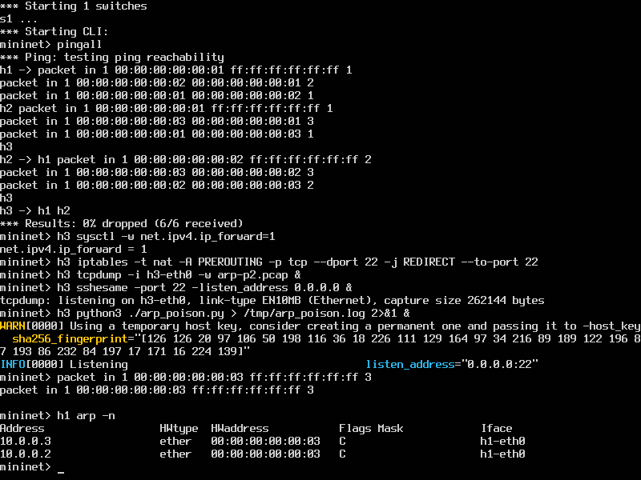

Aluksi käynnistin Larin ohjeiden mukaisesti verkko-ohjaimen: ryu-manager ryu.app.simple_switch_13 & ja loin kolme tietokonetta ja kytkimen komennolla: sudo mn --topo single,3 --mac --switch ovsk --controller remote. Tarkistin verkon toiminnan komennolla: pingall ja kaikki vaikutti olevan kunnossa.
Tämän jälkeen tarkistin h1:n ARP-taulun komennolla: h1 arp -n.
Otin h3-koneella IP-pakettien välityksen käyttöön komennolla: h3 sysctl -w net.ipv4.ip_forward=1.
Seuraavaksi lisäsin iptables-säännön, jolla SSH-liikenne ohjataan h3-koneen porttiin 22: h3 iptables -t nat -A PREROUTING -p tcp --dport 22 -j REDIRECT --to-port 22.
Käynnistin verkkoliikenteen tallennuksen tcpdump-ohjelmalla: h3 tcpdump -i h3-eth0 -w arp-p2.pcap &. Tallennuksen tarkoituksena oli tutkia verkkoliikennettä myöhemmin Wiresharkilla.
Seuraavaksi käynnistin SSHesame-palvelun h3-koneen portissa 22: h3 sshesame -port 22 -listen_address 0.0.0.0 &.
Käynnistin ARP-myrkytysohjelman komennolla: h3 python3 ./arp_poison.py > /tmp/arp_poison.log 2>&1 &.
Tämän jälkeen tarkistin uudelleen h1:n ARP-taulun komennolla: h1 arp -n. Huomasin, että sekä h2:n että h3:n IP-osoitteisiin liittyi nyt sama MAC-osoite (00:00:00:00:00:03). Tämä osoitti, että ARP-myrkytys oli onnistunut.

Jatkoin harjoitusta käynnistämällä h2-koneen SSH-palvelimen komennolla: h2 /usr/sbin/sshd.
Poistin h1-koneelta h2-koneen vanhan SSH-avaimen komennolla: h1 ssh-keygen -R h2 ja muodostin uuden SSH-yhteyden h2-koneeseen komennolla: h1 ssh h2.
Yhteyden muodostamisen yhteydessä SSH ilmoitti, ettei palvelimen avainta ollut aiemmin tunnistettu ja kysyi, haluanko hyväksyä uuden avaimen. Vastasin yes. ARP-myrkytyksen seurauksena yhteys ohjautui h3-koneessa toimivaan SSHesame-palveluun alkuperäisen h2-palvelimen sijasta.
Tarkistin SSHesamen lokit komennolla h3 ps -ef | grep sshesame ja havaitsin tapahtumat Client connected, Password authentication accepted ja SSH connection established. Näiden perusteella pystyin toteamaan, että SSHesame vastaanotti yhteyden ja kirjautumisyrityksen onnistuneesti.

Lopuksi pysäytin tcpdump-tallennuksen komennolla: h3 pkill tcpdump ja tarkistin tallennetun tiedoston komennolla: h3 ls -lh /home/mininet/arp-p2.pcap. Tallenne oli noin 80 kilotavun kokoinen.
Siirsin tallennetiedoston Windows-koneelle PowerShellin scp-komennolla: scp mininet@192.168.211.128:/home/mininet/arp-p2.pcap "$env:USERPROFILE\Downloads\".
Avasin tallenteen Windowsin Wiresharkissa ja selailin ARP-paketteja.
Avasin yhden paketin ARP-tabin ja näin, että Sender MAC address oli 00:00:00:00:00:03, mutta Sender IP address oli 10.0.0.2. Wireshark-analyysi vahvisti siis, että ARP-myrkytys oli onnistunut ja h3 esiintyi verkossa h2-koneena.